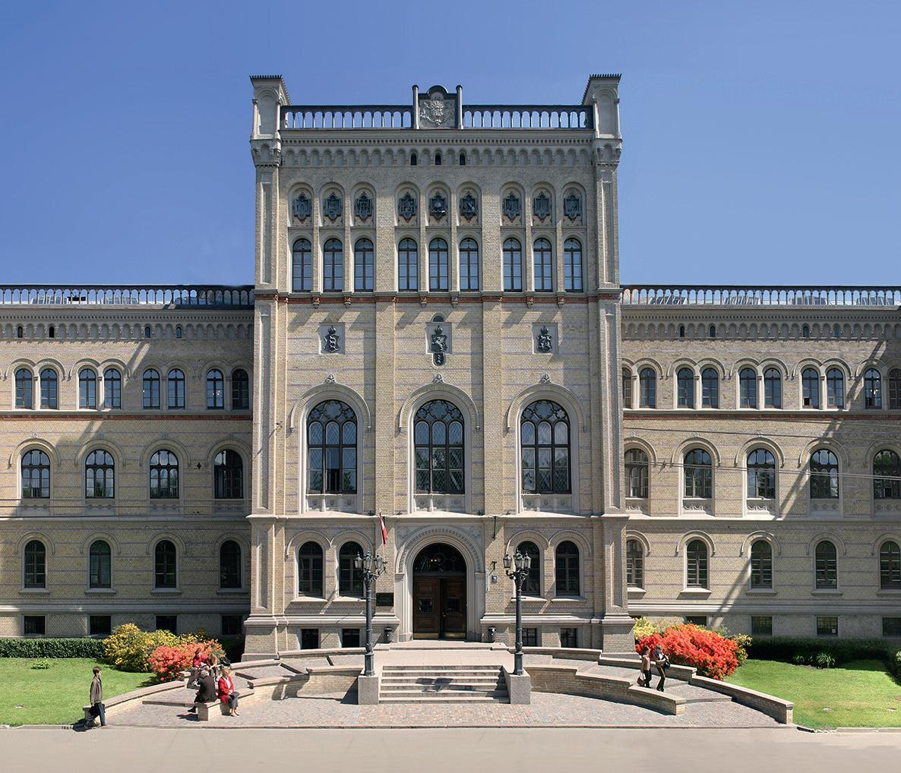
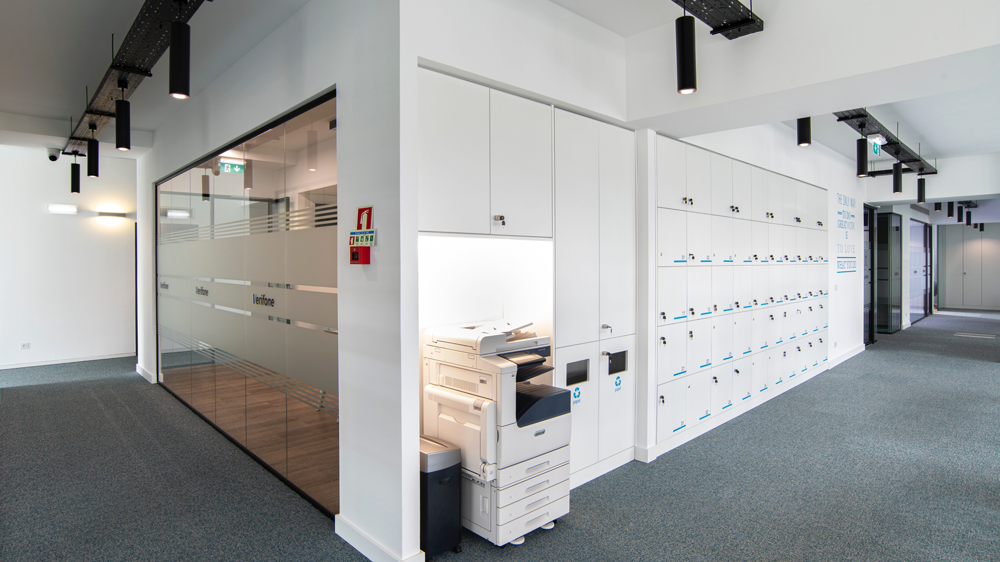
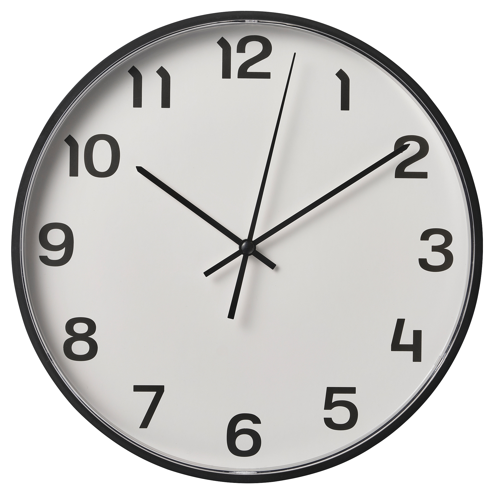
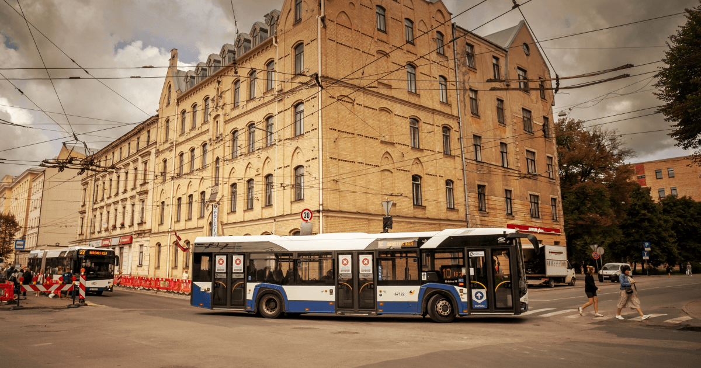

Studijas un darbs līdzsvarā

Šī ir viena apvienota vietne par Datorikas nodaļas studenta darba nedēļu. Zemāk atradīsi strukturētas sadaļas, kas pārslēdzas kā pilna ekrāna kartītes, nodrošinot ērtu lasīšanu un plūdenu navigāciju.

Studiju ritms
Pirmdiena sākas ekrānā, nevis pie galda.
Pirmdienas rītā studenta diena visbiežāk sākas ar e-pasta pārbaudi, lekciju sarakstu un e-studiju paziņojumiem. Kamēr dators vēl mostas, tiek salīdzināti pasniedzēju norādījumi, termiņi un kursa materiāli. Daļa uzdevumu atrodas vienuviet, daļa ir noslēpta vairākās platformās, tāpēc svarīgākais ir ātri saprast, kur kas jāmeklē. Šis brīdis man šķiet kā nedēļas koordinācijas centrs: ja rīta digitālais haoss ir sakārtots, pārējā diena rit mierīgāk. Tieši tāpēc svarīgs ir labs ieradums uzreiz pierakstīt darāmos darbus un atzīmēt prioritātes. Praktiskai orientācijai var noderēt arī LU un e-studiju oficiālās vietnes, kur informācija ir pieejama bez liekiem starpposmiem.
Darbs un lekcijas
Lekciju diena ir ritms starp auditoriju un tīmekļa kameru.
Otrdienās un trešdienās studenta dzīve bieži sadalās divās daļās: viena daļa notiek klātienē, otra tiešsaistē. Auditorijā ir vieglāk uztvert vidi, pasniedzēja balsi un kolēģu jautājumus, bet tiešsaistes nodarbībās svarīga kļūst disciplīna un spēja nepazust starp ekrāniem. Pie datora nākas pārslēgties starp prezentāciju, kodu un pierakstiem, savukārt klātienē vairāk jāpievērš uzmanība sarunām un demonstrācijām. Man patīk, ka šāda kombinācija trenē koncentrēšanos dažādās situācijās. Vienlaikus tā atgādina, ka digitālās prasmes nav tikai tehnoloģiju pārzināšana, bet arī spēja organizēt uzmanību. Nedēļas vidū visbiežāk kļūst skaidrs, kuri kursi prasa papildu darbu un kuri dod pārliecību par progresu.


Konspekti un mājasdarbi
Darbs pēc lekcijām sākas tur, kur beidzas slaidi.
Pēc nodarbībām studenta diena nav beigusies, jo tieši vakarā sākas patstāvīgais darbs. Tiek pārlasīti pieraksti, salīdzināti piemēri un mēģināts saprast, kurā brīdī kods sāka rīkoties citādi, nekā vajadzēja. Šeit noder lēns, bet precīzs darbs: vispirms saprast uzdevuma mērķi, tad sadalīt to mazākos soļos un tikai pēc tam rakstīt risinājumu. Dažreiz pietiek ar īsu konspektu, citreiz jāveido vizuāls plāns vai jāstrādā ar vairākām failu versijām. Šī sadaļa manā nedēļā ir vismierīgākā tikai no malas, jo tieši šeit dzimst visvairāk atkārtojumu, kļūdu un labojumu.
Brauciens uz studijām
Maršruts uz studijām ir neliels pārejas rituāls.
Ceļš uz universitāti manā nedēļā ir svarīgs pārrāvums starp mājas režīmu un studiju režīmu. Brauciens ar sabiedrisko transportu vai iešana kājām palīdz sakārtot domas, pārskatīt dienas plānu un vēlreiz pārliecināties, ka līdzi ir viss vajadzīgais. Reizēm ceļā tiek pārlasītas piezīmes telefonā, reizēm vienkārši vērots pilsētas ritms un cilvēki. Šie īsie pārsēšanās brīži šķiet mazi, taču tie ļauj mentāli sagatavoties lekcijai vai laboratorijai. Ja diena sākusies steigā, tieši ceļš palīdz atgūt līdzsvaru.

Grūtības un risinājumi
Ne katra diena rit gludi, un tieši tas māca visvairāk.
Studiju nedēļā grūtības parādās ļoti praktiski: kādreiz nepietiek laika, citreiz kāds uzdevums nav līdz galam saprotams, bet reizēm vienkārši uzkrājas nogurums. Tieši tad ir svarīgi apstāties, nevis turpināt strādāt mehāniski. Man palīdz sadalīt problēmu mazākos soļos, pārbaudīt avotus, uzdot jautājumus kursabiedriem vai pasniedzējam un īsi noformulēt, kas tieši nav skaidrs. Bieži vien pats sarežģītākais brīdis ir sākums, nevis pats uzdevums. Kad pirmā barjera ir pārvarēta, pārējais kļūst saprotamāks. Šī sadaļa atgādina, ka studenta dzīvē grūtības nav neveiksme, bet normāla procesa daļa.